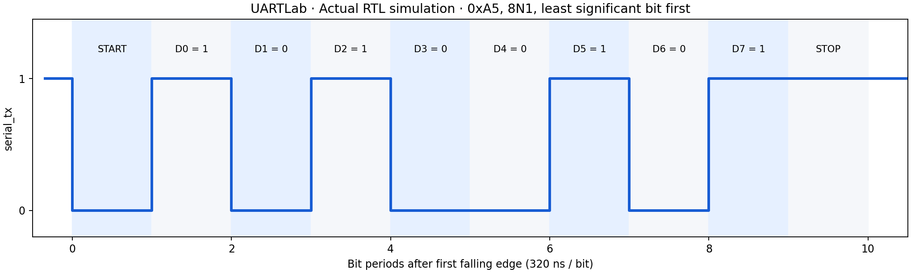

Real RTL. Recorded signals.
This trace was extracted from the Icarus Verilog VCD: byte 0xA5, 100 MHz test clock, 32 clocks per bit.


100 MHz is the testbench clock, not a measured FPGA capability.
SYSTEMVERILOG · SIMULATION PROJECT
A UART controller you can inspect, understand, and reproduce. Follow each bit through the frame. See how queues handle the traffic.
Laptop only. Open source. No hardware required.
01 / FRAME EXPLORER
Choose a byte and step through its least significant bit first. This browser model illustrates the protocol; the Verilog simulation evidence is below.
02 / FLOW CONTROL
Queue bytes, consume the oldest, or try both on one clock edge. A full queue accepts a replacement when its current head is consumed.
Empty. Push a byte to begin.
Demonstrates the shared FIFO rules. In the UART, TX uses ready/valid backpressure; RX drops a newly received byte when full and latches overrun.
03 / VERIFICATION
This trace was extracted from the Icarus Verilog VCD: byte 0xA5, 100 MHz test clock, 32 clocks per bit.

100 MHz is the testbench clock, not a measured FPGA capability.
15 PASS groups across the FIFO test and UART runs at 32 and 8 clocks/bit. Two baud-offset samples run at 32 clocks/bit; this is not a certified tolerance bound.
Full verification record ↗04 / MAKE IT YOURS
Start with the beginner guide, then follow a byte through the FIFO and state machines.
Open beginner guide ↗sudo apt-get install iverilog gtkwave make make test gtkwave results/uart-cpb32.vcdDownload complete source ↓